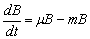
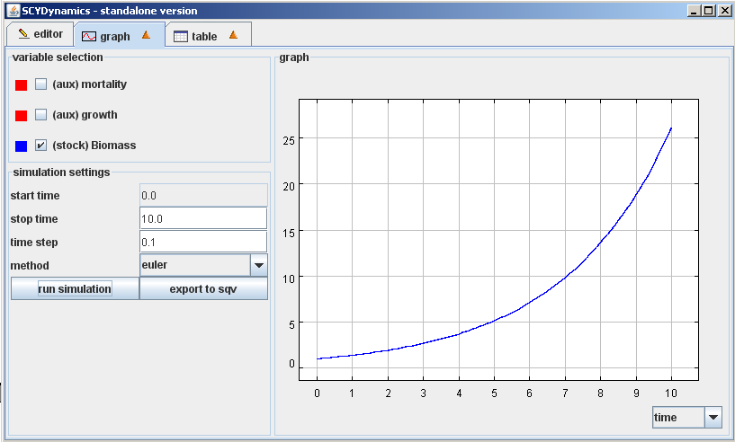
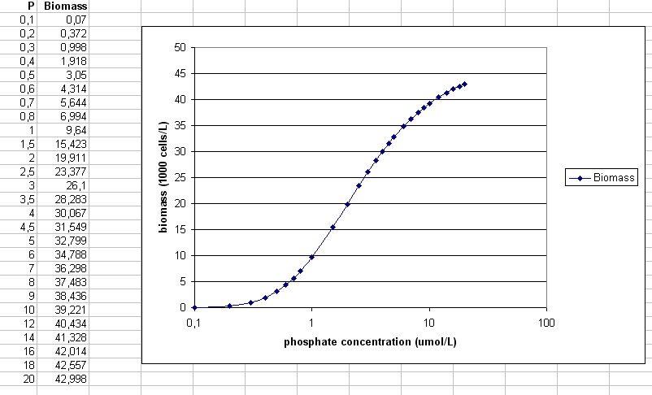

The simple model has one stock: biomass (phytoplankton growth). Biomass increase depends on nitrate (NO3-) and phosphate (PO43-) concentrations. Change in phytoplankton biomass B can be described as a function of growth (µ) and mortality (m) as:
Where µ (effective growth rate) is defined as:

Where [PO43-] and [NO3-] denote concentrations of phosphate and nitrate in the water, and HPO4 and HNO3 are the half-saturation constants for phosphate and nitrate respectively. The half-saturation constant is an indication for the affinity of a phytoplankton species for a resource. A lower half-saturation constant indicates a higher affinity. This affinity depends, among others, on the amount of resourced needed for growth. Because phytoplankton cells contain ~16 times less P than N (according to the famous Redfield ratio), the half-saturation constant for PO43- is typically lower than for NO3-. Also, biomass decreases at a constant (mortality) rate. Values that could be used:
m: 0.59 d-1
µmax: 1.35 d-1
HPO4: 0.2 µmol L-1
HNO3: 5.6 µmol L-1
In this simple SCYDynamics model students can tweak the nitrate and phosphate concentrations (denoted as constants N and P). The affinity values and the maximum growth rate are biological constants that should not be changed. The model will behave as follows. When the concentration of a resource is higher than the half-saturation constant, the growth approaches µmax, whereas if the concentration of a resource is lower than the half-saturation constant, growth approaches 0. In this simple model, growth is always exponential. Thus, nitrate and phosphate concentrations influence the growth speed.
The influence of N and P on biomass

Biomass growth (N = 15 µmol/L, P = 3 µmol/L)
Amount of biomass after running the simulation for ten time steps (days) for different nitrate concentrations (N) and a phosphate concentration of 3 µmol/L.

Amount of biomass after running the simulation for ten time steps (days) for different phosphate concentrations (P) and a nitrate concentration of 15 µmol/L.
